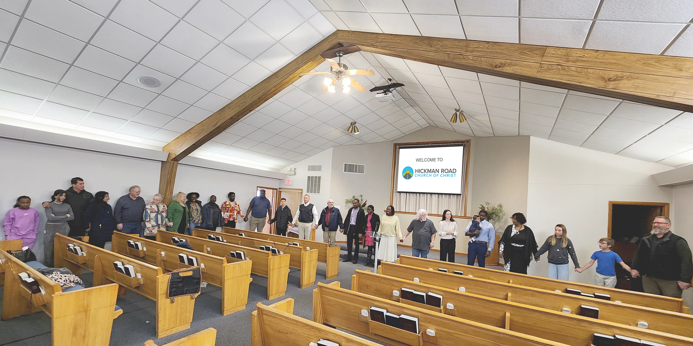
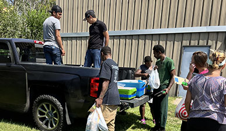
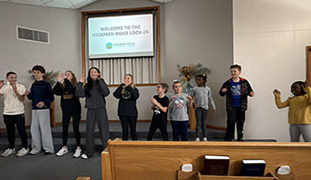

A Common Love.
A Shared Hope.
Growing in Christ.
A community gathering to worship, grow, and serve. Come join us on Hickman Road.
Loving God
Serving others
Growing as His disciples
Bringing Jesus to the lost
All for the glory of His kingdom.
Get Involved
Our Ministries

Ministry
Outreach
Serving neighbors through food drives, community events, and mission partnerships near and far.
Learn More ›
Ministry
Youth
Building the next generation of faith through Bible study, retreats, and intentional mentorship.
Learn More ›
Ministry
Fellowship
Connecting families and individuals through shared meals, small groups, and celebration.
Learn More ›